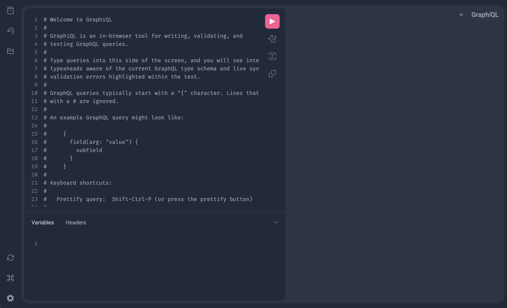
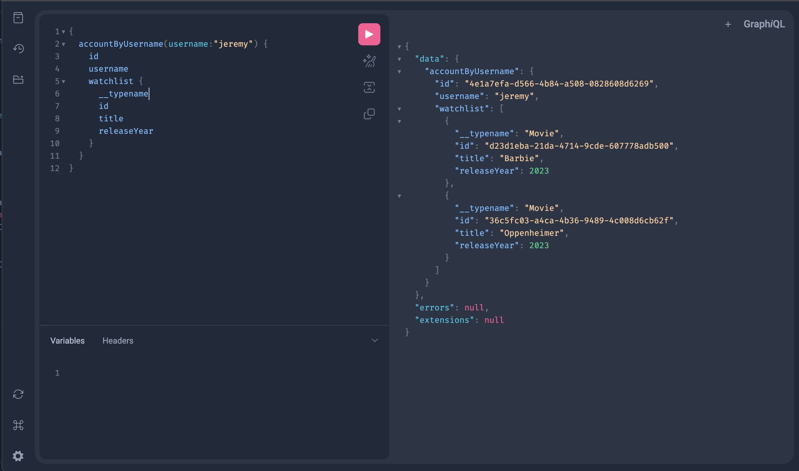

FastGQL
FastGQL is a python GraphQL library that uses Pydantic models to build GraphQL types. Think FastAPI for GraphQL.
from fastapi import FastAPI
from fastgql import GQL, build_router
class User(GQL):
name: str
age: int
class Query(GQL):
def user_by_name(self, name: str) -> User:
return User(name=name, age=27)
router = build_router(query_models=[Query])
app = FastAPI()
app.include_router(router, prefix="/graphql")
- let me use
pydantic.BaseModelobjects to define my schema - let me build dynamic database queries based on incoming requests
We are now using FastGQL in production and have experienced a massive (10x) speedup in average response times because of 2).
You can find out more about how we build dynamic database queries in the Advanced Tutorial section of the docs.
Installation
Example
All you need to do is create objects that inherit from fastgql.GQL, which is a simple subclass of pydantic.BaseModel. For this example, I am creating a mock schema based on movies. For the functions, you'd usually use a database but I hardcoded the data for this example.
This code generates a GraphQL schema, reading the object fields and functions. Functions can be sync or async.
Code it
- Create a file
main.pywith:
from uuid import UUID, uuid4
from fastapi import FastAPI
from fastgql import GQL, build_router
class Account(GQL): # (4)!
id: UUID
username: str
def watchlist(self) -> list["Movie"]: # (1)!
# Usually you'd use a database to get the user's watchlist. For this example, it is hardcoded.
return [
Movie(id=uuid4(), title="Barbie", release_year=2023),
Movie(id=uuid4(), title="Oppenheimer", release_year=2023),
]
def _secret_function(self) -> str: # (2)!
return "this is not exposed!"
class Person(GQL):
id: UUID
name: str
def filmography(self) -> list["Movie"]:
return [
Movie(id=uuid4(), title="Barbie", release_year=2023),
Movie(id=uuid4(), title="Wolf of Wallstreet", release_year=2013),
]
class Movie(GQL):
id: UUID
title: str
release_year: int
def actors(self) -> list["Person"]:
return [
Person(id=uuid4(), name="Margot Robbie"),
Person(id=uuid4(), name="Ryan Gosling"),
]
class Query(GQL):
def account_by_username(self, username: str) -> Account: # (5)!
# Usually you'd use a database to get this account. For this example, it is hardcoded.
return Account(id=uuid4(), username=username)
router = build_router(query_models=[Query])
app = FastAPI() # (3)!
app.include_router(router, prefix="/graphql")
- Usually this would be a database call. There is an advanced tutorial showing this.
- Functions that start with
_are not included in the GraphQL schema. - This is just a normal FastAPI app.
fastgql.build_routerreturns a router that can be included on any FastAPI app. - These objects are subclasses of
pydantic.BaseModel, so anything you'd want to do with aBaseModelyou can do with these. You'll see how this comes in handy in future tutorials. - All of these functions can be sync or async. In a future tutorial I'll use an async database call to get data.
Run it
Run the server with:
(Taken from FastAPI docs) About the command uvicorn main:app --reload...
The command `uvicorn main:app` refers to:
- `main`: the file `main.py` (the Python "module").
- `app`: the object created inside of `main.py` with the line `app = FastAPI()`.
- `--reload`: make the server restart after code changes. Only do this for development.
Check it
Open your browser at http://127.0.0.1:8000/graphql.
You will see a GraphiQL UI. This is your homebase for creating GraphQL queries and checking the schema.

You can see the schema, build queries, and access query history from the icons in the top left respectivly. Here is an example query:
